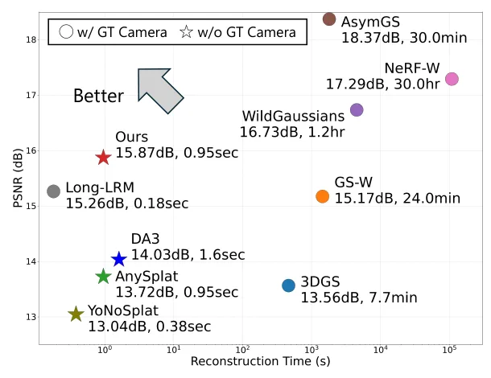
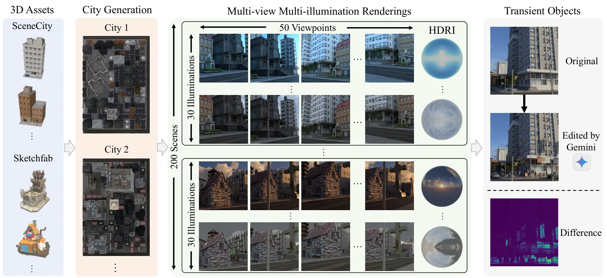
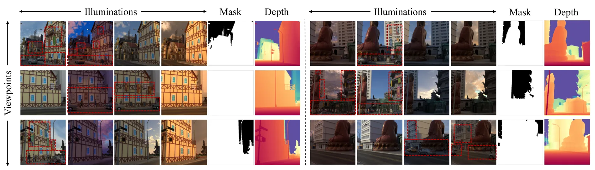
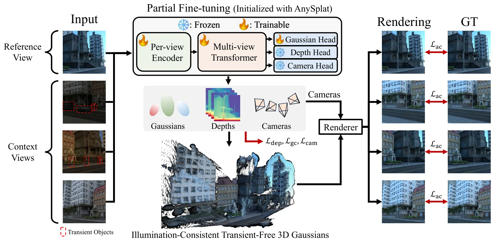
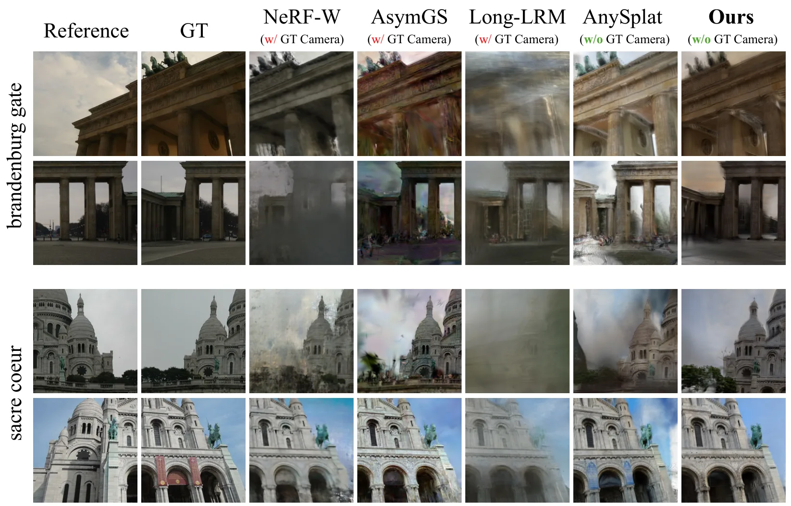
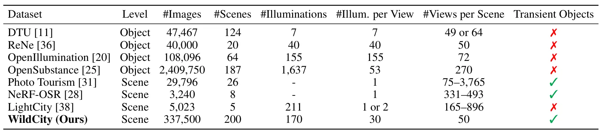
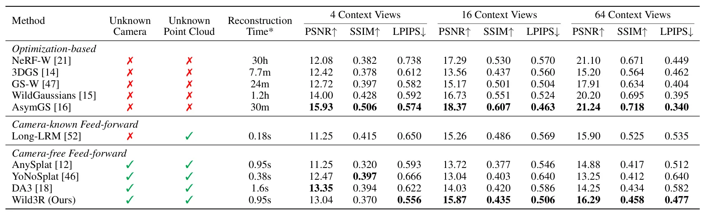

Wild3R：从非受控稀疏照片集进行前馈式 3D Gaussian SplattingWild3R: Feed-Forward 3D Gaussian Splatting from Unconstrained Sparse Photo Collection
对众包照片、城市巡检和快速 3DGS 地图生成有潜力；需进一步确认相机位姿假设和几何尺度稳定性。
一句话工作总结
Wild3R 通过 WildCity 大规模数据学习在光照变化和瞬态物体下从稀疏照片前馈生成 3DGS。
摘要
前馈式 3DGS 省去了传统 3DGS 逐场景优化的耗时步骤，但现有前馈方法难以处理真实照片集中常见的光照多样性和瞬态物体。本文提出 Wild3R，面向非受控稀疏照片集的前馈式方法。主要瓶颈在于缺少同时包含多视角、多光照和瞬态变化的训练数据。为此，作者构建 WildCity 数据集，包含 200 个场景、170 种光照条件和瞬态物体，总计 337,500 张图像。借助该数据集，模型学习以参考视图为条件的跨视角外观一致性，同时移除瞬态内容。大量实验表明，该方法优于现有前馈方法，并达到与部分逐场景优化方法相竞争的结果。
Feed-forward 3D Gaussian Splatting (3DGS) removes the need for time-consuming per-scene optimization required by traditional 3DGS. However, existing feed-forward approaches struggle with real-world photo collections that include diverse lighting conditions and transient objects. In this paper, we present Wild3R, a feed-forward approach for unconstrained sparse photo collections. The main bottleneck is the lack of training data that provides multiple viewpoints, a variety of illuminations, and transient variations necessary for learning robust scene representations. To address this, we introduce the WildCity dataset, which comprises 200 scenes, 170 lighting conditions, and transient objects, resulting in 337,500 images in total. By leveraging the dataset, our model learns appearance consistency across viewpoints conditioned on reference views, while removing transient content. Extensive experiments demonstrate that our method outperforms existing feed-forward approaches and achieves results competitive with prior per-scene optimization-based methods.
中文解读摘录
- 作者：Matthew Cong, Francis Williams, Jonathan Swartz, Mark Harris, Sanja Fidler, Ken Museth；类别：cs.CV / cs.DC / cs.GR / cs.LG；发布日期：2026-06-10；备注：14 pages, 6 tables, 2 figures；采集 score=13
- 核心问题：3DGS 在真实大场景重建中受单 GPU 显存与算力限制，难以扩大到城市级、街景级细节，同时多卡分布式实现通常要求模型代码显式处理跨设备通信。
- 方法亮点：提出一个 PyTorch backend，把 Gaussian 参数和 splatting operators 通过 CUDA unified memory 与 NVLink 分布到多 GPU；分布发生在 operator 层，模型代码可把多张 GPU 视作聚合 PyTorch device，不需要手写跨设备通信。
- 结果信号：展示了包含 超过 10 亿 Gaussian splats 的城市级重建，数量超过当前 SOTA 25 倍以上，并保持街景级细节。
- 关注价值：这更像 3DGS 系统/基础设施论文，不是 SLAM 算法；但对大尺度机器人地图、城市数字孪生和长序列 Nerfstudio/3DGS 重建非常关键。后续应关注显存分页、NVLink 依赖、训练/渲染吞吐，以及是否能接入已有 COLMAP/SLAM 位姿和地图分块流程。
图表/页面预览

{kind=link}

{kind=link}

{kind=link}

{kind=link}

{kind=link}

{kind=link}

{kind=link}
